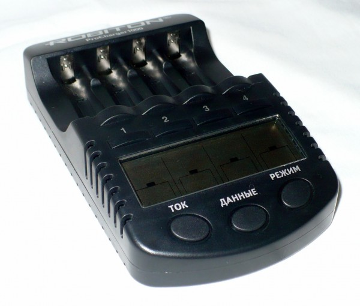
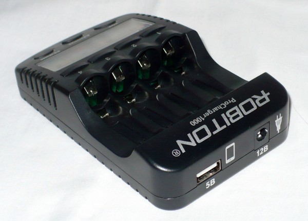
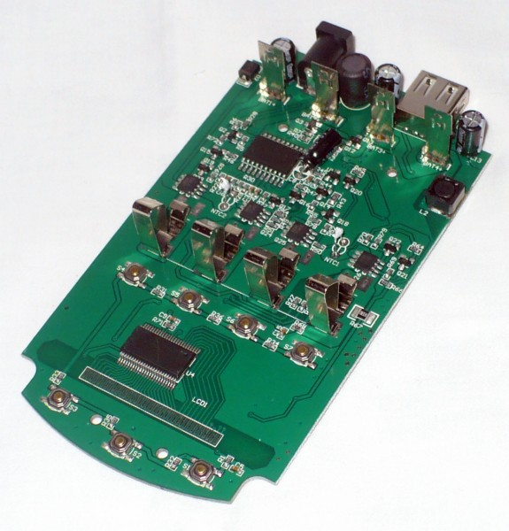
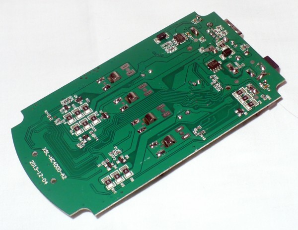
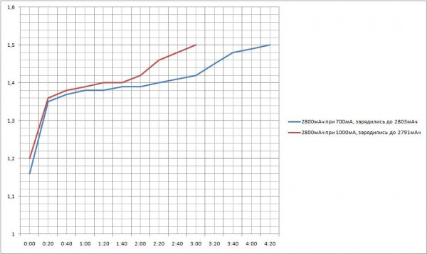
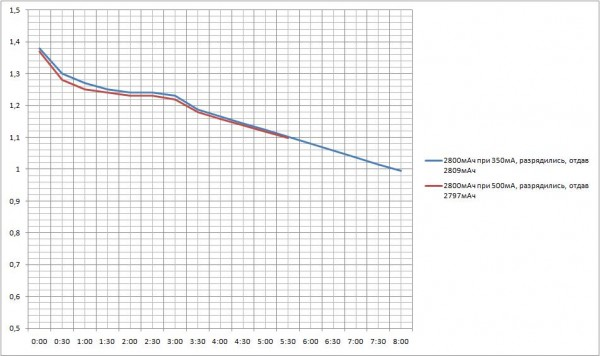

Особенности зарядного устройства ProCharger 1000
Упаковка и комплектация
Зарядное устройство Pro Charger 1000 поставляется в картонной коробке чёрного цвета с обилием информации. На фронтальной стороне коробки красуется изображение самого ЗУ и основная информация о нём.
В комплект входят:
Внешний вид и органы управления
Пластмассовый корпус чёрного цвета с 4 слотами под «пальчиковые» (AA/HR06) и «мизинчиковые» (AAA/HR03) аккумуляторы. Так же, на корпусе, расположился ЖК-дисплей без подсветки и 7 функциональных клавиш, 4 из которых отвечают за выбор канала и еще 3 клавиши с надписями Ток, Данные и Режим, позволяют выбирать ток заряда/разряда, переключать выводимую информацию на дисплей (ток заряда/разряда, напряжение, набранную или скачанную ёмкость и затраченное время время) и менять режимы работы устройства непосредственно для каждого канала.

Сзади расположился USB-разъём для подключения или заряда различных мобильных девайсов и разъём для подключения зарядного устройства к блоку питания, или его питания от автомобильного прикуривателя.

По бокам корпуса, возле дисплея, а так же на тыльной стороне «зарядника», расположены отверстия для его пассивного охлаждения.
Внутреннее устройство зарядника …
 
… думаю, стоит отметить расположение хорошенько смазанных термопастой термисторов (NTC1 и NTC2), которые находятся под пластмассой, и не имеют непосредственного контакта с аккумуляторами.
Режимы работы зарядного устройства
Устройство может производить заряд аккумуляторов (режим CHARGE) и автоматически переключаться на так называемый «капельный заряд», разряжать их (режим DISCHARGE), а так же тренировать (режим REFRESH) и тестировать(режим TEST).
Примечание: при выборе режима «DISCHARGE» необходимо учитывать то, что ток разряда составляет половину от тока заряда. Другими словами, при выборе тока разряда 100mA, ток зарядки будет составлять 200mA, а для 250mA на разряде, соответственно, 500mA при заряде … и т.д.
Тестирование устройства
В ходе тестирования Robiton ProCharger1000 использовались «пальчиковые» аккумуляторы на 2800mAh и «мизинчиковые» на 1000mAh. Перед началом тестов все батарейки были разряжены лампой накаливания с токопотреблением 3V и током 500mА. Во время тестирования каждый аккумулятор заряжался различными токами.

Последующий разряд производился самим устройством с разными токами разряда.

Доверяй но проверяй. Во время заряда аккумуляторов, я решил проверить, действительно ли заявленные токи совпадают с действительными. Проверку производил китайским цифровым мультиметром DT830B. Результаты весьма порадовали, в среднем отклонения составили ±0,003А.
Выводы:
Впечатления от данного ЗУ очень положительные. Контрольные замеры — порадовали. Заряд аккумуляторов совпал с таблицей приблизительного времени заряда аккумуляторов. Токи заряда/разряда практически не отличались от установленных, для каждого канала.
Инструкция по эксплуатации полностью на русском языке, всё очень подробно расписано, хотя она даже и не требуется, все интуитивно понятно и без неё, т.к. кнопки управления, так же имеют подписи на русском языке.
К плюсам данного устройства стоит отнести:
Минусов, на мой взгляд, нет!